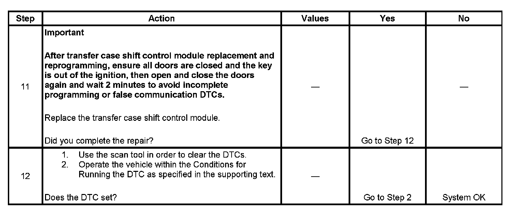

C0300
DTC C0300
Circuit Description
The rear propshaft speed sensor is a permanent magnet generator. The permanent magnet generator produces a pulsing AC voltage. The AC voltage level and number of pulses increases as speed increases. The module converts the pulsating AC voltage to a propshaft RPM which is used for calculations. The propshaft RPM can be displayed with a scan tool.
This DTC detects an open, short to ground, short to voltage or faulty sensor.
DTC Descriptor
This diagnostic procedure supports the following DTC:
DTC C0300 Rear Speed Sensor Malfunction
Conditions for Running the DTC
^ The ignition is ON.
^ The system voltage is 9-18 volts.
^ The vehicle speed exceeds 16 km/h (10 mph).
Conditions for Setting the DTC
The system logs the DTC if the rear propshaft input indicates a speed of less than 16 RPM for 30 seconds while all of the following are true:
^ The transmission is not in Park/Neutral.
^ The engine is running.
^ The front axle is engaged.
^ The vehicle speed on Class 2 data bus exceeds 16 km/h (10 mph).
Action Taken When the DTC Sets
^ All shifts to AUTO, or the Adapt mode is disabled. If the current mode is AUTO, the system does not allow any further adaptive events, such as correcting slip.
^ The SERVICE 4WD indicator remains illuminated for the remainder of the current ignition cycle.
Conditions for Clearing the DTC
^ The transfer case shift control module will clear the DTC if the condition for setting the DTC is not currently present.
^ A history DTC will clear after 100 consecutive ignition cycles without a fault present.
^ History DTCs can be cleared using a scan tool.
Test Description
The numbers below refer to the step numbers on the diagnostic table.
2. This step tests to see if the malfunction is intermittent.
3. This step tests the internal resistance of the propshaft speed sensor.
4. This step tests to see if the propshaft speed sensor can generate a sufficient amount of AC voltage.
5. This step tests the rear propshaft speed sensor low circuit for a short to ground, a high resistance, or an open.
6. This step tests the rear propshaft speed sensor high circuit for a short to ground, a high resistance or an open.
7. This step tests the rear propshaft speed sensor low circuit for a short to voltage.
8. This step tests the rear propshaft speed sensor high circuit for a short to voltage.
9. This step tests the rear propshaft speed sensor low circuit for a short to the rear speed sensor high circuit.
Step 1 - Step 10:

Step 11 - Step 12:
